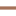

<!doctype html>
<html lang="en">
    <head>
        <meta charset="utf-8">
        <meta http-equiv="X-UA-Compatible" content="IE=edge">
        <meta name="viewport" content="initial-scale=1,user-scalable=no,maximum-scale=1,width=device-width">
        <meta name="mobile-web-app-capable" content="yes">
        <meta name="apple-mobile-web-app-capable" content="yes">
        <link rel="stylesheet" href="css/leaflet.css">
        <link rel="stylesheet" href="css/L.Control.Layers.Tree.css">
        <link rel="stylesheet" href="css/L.Control.Locate.min.css">
        <link rel="stylesheet" href="css/qgis2web.css">
        <link rel="stylesheet" href="css/fontawesome-all.min.css">
        <link rel="stylesheet" href="css/leaflet-search.css">
        <link rel="stylesheet" href="css/leaflet.photon.css">
        <link rel="stylesheet" href="css/leaflet-measure.css">
        <style>
        html, body, #map {
            width: 100%;
            height: 100%;
            padding: 0;
            margin: 0;
        }
        </style>
        <title>Desa Cipetung</title>
    </head>
    <body>
        <div id="map">
        </div>
        <script src="js/qgis2web_expressions.js"></script>
        <script src="js/leaflet.js"></script>
        <script src="js/L.Control.Layers.Tree.min.js"></script>
        <script src="js/L.Control.Locate.min.js"></script>
        <script src="js/leaflet.rotatedMarker.js"></script>
        <script src="js/leaflet.pattern.js"></script>
        <script src="js/leaflet-hash.js"></script>
        <script src="js/Autolinker.min.js"></script>
        <script src="js/rbush.min.js"></script>
        <script src="js/labelgun.min.js"></script>
        <script src="js/labels.js"></script>
        <script src="js/leaflet.photon.js"></script>
        <script src="js/leaflet-measure.js"></script>
        <script src="js/leaflet-search.js"></script>
        <script src="data/BatasWilayahDesaCipetung_1.js"></script>
        <script src="data/Jalan_2.js"></script>
        <script src="data/KantorBalaiDesaCipetung_3.js"></script>
        <script src="data/TempatIbadah_4.js"></script>
        <script>
        var map = L.map('map', {
            zoomControl:false, maxZoom:28, minZoom:1
        }).fitBounds([[-7.265881538598157,109.0554565060508],[-7.236503886869294,109.10263440981242]]);
        var hash = new L.Hash(map);
        map.attributionControl.setPrefix('<a href="https://github.com/tomchadwin/qgis2web" target="_blank">qgis2web</a> &middot; <a href="https://leafletjs.com" title="A JS library for interactive maps">Leaflet</a> &middot; <a href="https://qgis.org">QGIS</a>');
        var autolinker = new Autolinker({truncate: {length: 30, location: 'smart'}});
        // remove popup's row if "visible-with-data"
        function removeEmptyRowsFromPopupContent(content, feature) {
         var tempDiv = document.createElement('div');
         tempDiv.innerHTML = content;
         var rows = tempDiv.querySelectorAll('tr');
         for (var i = 0; i < rows.length; i++) {
             var td = rows[i].querySelector('td.visible-with-data');
             var key = td ? td.id : '';
             if (td && td.classList.contains('visible-with-data') && feature.properties[key] == null) {
                 rows[i].parentNode.removeChild(rows[i]);
             }
         }
         return tempDiv.innerHTML;
        }
        // add class to format popup if it contains media
		function addClassToPopupIfMedia(content, popup) {
			var tempDiv = document.createElement('div');
			tempDiv.innerHTML = content;
			if (tempDiv.querySelector('td img')) {
				popup._contentNode.classList.add('media');
					// Delay to force the redraw
					setTimeout(function() {
						popup.update();
					}, 10);
			} else {
				popup._contentNode.classList.remove('media');
			}
		}
        var zoomControl = L.control.zoom({
            position: 'topleft'
        }).addTo(map);
        L.control.locate({locateOptions: {maxZoom: 19}}).addTo(map);
        var measureControl = new L.Control.Measure({
            position: 'topleft',
            primaryLengthUnit: 'meters',
            secondaryLengthUnit: 'kilometers',
            primaryAreaUnit: 'sqmeters',
            secondaryAreaUnit: 'hectares'
        });
        measureControl.addTo(map);
        document.getElementsByClassName('leaflet-control-measure-toggle')[0].innerHTML = '';
        document.getElementsByClassName('leaflet-control-measure-toggle')[0].className += ' fas fa-ruler';
        var bounds_group = new L.featureGroup([]);
        function setBounds() {
        }
        map.createPane('pane_GoogleMaps_0');
        map.getPane('pane_GoogleMaps_0').style.zIndex = 400;
        var layer_GoogleMaps_0 = L.tileLayer('https://mt1.google.com/vt/lyrs=m&x={x}&y={y}&z={z}', {
            pane: 'pane_GoogleMaps_0',
            opacity: 1.0,
            attribution: '',
            minZoom: 1,
            maxZoom: 28,
        });
        layer_GoogleMaps_0;
        map.addLayer(layer_GoogleMaps_0);
        function pop_BatasWilayahDesaCipetung_1(feature, layer) {
            var popupContent = '<table>\
                    <tr>\
                        <td colspan="2">' + (feature.properties['id'] !== null ? autolinker.link(String(feature.properties['id']).replace(/'/g, '\'').toLocaleString()) : '') + '</td>\
                    </tr>\
                    <tr>\
                        <th scope="row">Nama Desa</th>\
                        <td>' + (feature.properties['Nama Desa'] !== null ? autolinker.link(String(feature.properties['Nama Desa']).replace(/'/g, '\'').toLocaleString()) : '') + '</td>\
                    </tr>\
                </table>';
            var content = removeEmptyRowsFromPopupContent(popupContent, feature);
			layer.on('popupopen', function(e) {
				addClassToPopupIfMedia(content, e.popup);
			});
			layer.bindPopup(content, { maxHeight: 400 });
        }

        function style_BatasWilayahDesaCipetung_1_0() {
            return {
                pane: 'pane_BatasWilayahDesaCipetung_1',
                opacity: 1,
                color: 'rgba(35,35,35,1.0)',
                dashArray: '',
                lineCap: 'butt',
                lineJoin: 'miter',
                weight: 1.0, 
                fill: true,
                fillOpacity: 1,
                fillColor: 'rgba(68,227,16,0.30196078431372547)',
                interactive: true,
            }
        }
        map.createPane('pane_BatasWilayahDesaCipetung_1');
        map.getPane('pane_BatasWilayahDesaCipetung_1').style.zIndex = 401;
        map.getPane('pane_BatasWilayahDesaCipetung_1').style['mix-blend-mode'] = 'normal';
        var layer_BatasWilayahDesaCipetung_1 = new L.geoJson(json_BatasWilayahDesaCipetung_1, {
            attribution: '',
            interactive: true,
            dataVar: 'json_BatasWilayahDesaCipetung_1',
            layerName: 'layer_BatasWilayahDesaCipetung_1',
            pane: 'pane_BatasWilayahDesaCipetung_1',
            onEachFeature: pop_BatasWilayahDesaCipetung_1,
            style: style_BatasWilayahDesaCipetung_1_0,
        });
        bounds_group.addLayer(layer_BatasWilayahDesaCipetung_1);
        map.addLayer(layer_BatasWilayahDesaCipetung_1);
        function pop_Jalan_2(feature, layer) {
            var popupContent = '<table>\
                    <tr>\
                        <td colspan="2">' + (feature.properties['id'] !== null ? autolinker.link(String(feature.properties['id']).replace(/'/g, '\'').toLocaleString()) : '') + '</td>\
                    </tr>\
                    <tr>\
                        <th scope="row">Nama</th>\
                        <td>' + (feature.properties['Nama'] !== null ? autolinker.link(String(feature.properties['Nama']).replace(/'/g, '\'').toLocaleString()) : '') + '</td>\
                    </tr>\
                </table>';
            var content = removeEmptyRowsFromPopupContent(popupContent, feature);
			layer.on('popupopen', function(e) {
				addClassToPopupIfMedia(content, e.popup);
			});
			layer.bindPopup(content, { maxHeight: 400 });
        }

        function style_Jalan_2_0() {
            return {
                pane: 'pane_Jalan_2',
                opacity: 1,
                color: 'rgba(164,113,88,1.0)',
                dashArray: '',
                lineCap: 'square',
                lineJoin: 'bevel',
                weight: 3.0,
                fillOpacity: 0,
                interactive: true,
            }
        }
        map.createPane('pane_Jalan_2');
        map.getPane('pane_Jalan_2').style.zIndex = 402;
        map.getPane('pane_Jalan_2').style['mix-blend-mode'] = 'normal';
        var layer_Jalan_2 = new L.geoJson(json_Jalan_2, {
            attribution: '',
            interactive: true,
            dataVar: 'json_Jalan_2',
            layerName: 'layer_Jalan_2',
            pane: 'pane_Jalan_2',
            onEachFeature: pop_Jalan_2,
            style: style_Jalan_2_0,
        });
        bounds_group.addLayer(layer_Jalan_2);
        map.addLayer(layer_Jalan_2);
        function pop_KantorBalaiDesaCipetung_3(feature, layer) {
            var popupContent = '<table>\
                    <tr>\
                        <td colspan="2">' + (feature.properties['id'] !== null ? autolinker.link(String(feature.properties['id']).replace(/'/g, '\'').toLocaleString()) : '') + '</td>\
                    </tr>\
                    <tr>\
                        <th scope="row">Nama</th>\
                        <td>' + (feature.properties['Nama'] !== null ? autolinker.link(String(feature.properties['Nama']).replace(/'/g, '\'').toLocaleString()) : '') + '</td>\
                    </tr>\
                </table>';
            var content = removeEmptyRowsFromPopupContent(popupContent, feature);
			layer.on('popupopen', function(e) {
				addClassToPopupIfMedia(content, e.popup);
			});
			layer.bindPopup(content, { maxHeight: 400 });
        }

        function style_KantorBalaiDesaCipetung_3_0() {
            return {
                pane: 'pane_KantorBalaiDesaCipetung_3',
        rotationAngle: 0.0,
        rotationOrigin: 'center center',
        icon: L.icon({
            iconUrl: 'markers/KantorBalaiDesaCipetung_3.svg',
            iconSize: [19.00000000000001, 19.00000000000001]
        }),
                interactive: true,
            }
        }
        map.createPane('pane_KantorBalaiDesaCipetung_3');
        map.getPane('pane_KantorBalaiDesaCipetung_3').style.zIndex = 403;
        map.getPane('pane_KantorBalaiDesaCipetung_3').style['mix-blend-mode'] = 'normal';
        var layer_KantorBalaiDesaCipetung_3 = new L.geoJson(json_KantorBalaiDesaCipetung_3, {
            attribution: '',
            interactive: true,
            dataVar: 'json_KantorBalaiDesaCipetung_3',
            layerName: 'layer_KantorBalaiDesaCipetung_3',
            pane: 'pane_KantorBalaiDesaCipetung_3',
            onEachFeature: pop_KantorBalaiDesaCipetung_3,
            pointToLayer: function (feature, latlng) {
                var context = {
                    feature: feature,
                    variables: {}
                };
                return L.marker(latlng, style_KantorBalaiDesaCipetung_3_0(feature));
            },
        });
        bounds_group.addLayer(layer_KantorBalaiDesaCipetung_3);
        map.addLayer(layer_KantorBalaiDesaCipetung_3);
        function pop_TempatIbadah_4(feature, layer) {
            var popupContent = '<table>\
                    <tr>\
                        <td colspan="2">' + (feature.properties['id'] !== null ? autolinker.link(String(feature.properties['id']).replace(/'/g, '\'').toLocaleString()) : '') + '</td>\
                    </tr>\
                    <tr>\
                        <th scope="row">Nama</th>\
                        <td>' + (feature.properties['Nama'] !== null ? autolinker.link(String(feature.properties['Nama']).replace(/'/g, '\'').toLocaleString()) : '') + '</td>\
                    </tr>\
                </table>';
            var content = removeEmptyRowsFromPopupContent(popupContent, feature);
			layer.on('popupopen', function(e) {
				addClassToPopupIfMedia(content, e.popup);
			});
			layer.bindPopup(content, { maxHeight: 400 });
        }

        function style_TempatIbadah_4_0() {
            return {
                pane: 'pane_TempatIbadah_4',
        rotationAngle: 0.0,
        rotationOrigin: 'center center',
        icon: L.icon({
            iconUrl: 'markers/TempatIbadah_4.svg',
            iconSize: [15.2, 15.2]
        }),
                interactive: true,
            }
        }
        map.createPane('pane_TempatIbadah_4');
        map.getPane('pane_TempatIbadah_4').style.zIndex = 404;
        map.getPane('pane_TempatIbadah_4').style['mix-blend-mode'] = 'normal';
        var layer_TempatIbadah_4 = new L.geoJson(json_TempatIbadah_4, {
            attribution: '',
            interactive: true,
            dataVar: 'json_TempatIbadah_4',
            layerName: 'layer_TempatIbadah_4',
            pane: 'pane_TempatIbadah_4',
            onEachFeature: pop_TempatIbadah_4,
            pointToLayer: function (feature, latlng) {
                var context = {
                    feature: feature,
                    variables: {}
                };
                return L.marker(latlng, style_TempatIbadah_4_0(feature));
            },
        });
        bounds_group.addLayer(layer_TempatIbadah_4);
        map.addLayer(layer_TempatIbadah_4);
        const url = {"Nominatim OSM": "https://nominatim.openstreetmap.org/search?format=geojson&addressdetails=1&",
        "France BAN": "https://api-adresse.data.gouv.fr/search/?"}
        var photonControl = L.control.photon({
            url: url["Nominatim OSM"],
            feedbackLabel: '',
            position: 'topleft',
            includePosition: true,
            initial: true,
            // resultsHandler: myHandler,
        }).addTo(map);
        photonControl._container.childNodes[0].style.borderRadius="10px"
        // Create a variable to store the geoJSON data
        var x = null;
        // Create a variable to store the marker
        var marker = null;
        // Add an event listener to the Photon control to create a marker from the returned geoJSON data
        var z = null;
        photonControl.on('selected', function(e) {
            console.log(photonControl.search.resultsContainer);
            if (x != null) {
                map.removeLayer(obj3.marker);
                map.removeLayer(x);
            }
            obj2.gcd = e.choice;
            x = L.geoJSON(obj2.gcd).addTo(map);
            var label = typeof obj2.gcd.properties.label === 'undefined' ? obj2.gcd.properties.display_name : obj2.gcd.properties.label;
            obj3.marker = L.marker(x.getLayers()[0].getLatLng()).bindPopup(label).addTo(map);
            map.setView(x.getLayers()[0].getLatLng(), 17);
            z = typeof e.choice.properties.label === 'undefined'? e.choice.properties.display_name : e.choice.properties.label;
            console.log(e);
            e.target.input.value = z;
        });
        var search = document.getElementsByClassName("leaflet-photon leaflet-control")[0];
        search.classList.add("leaflet-control-search")
        search.style.display = "flex";
        search.style.backgroundColor="rgba(255,255,255,0.5)" 

        // Create the new button element
        var button = document.createElement("div");
        button.id = "gcd-button-control";
        button.className = "gcd-gl-btn fa fa-search search-button";

        // Insert the button at the beginning of the search control
        search.insertBefore(button, search.firstChild);
        last = search.lastChild;
        last.style.display = "none";
        button.addEventListener("click", function (e) {
            if (last.style.display === "none") {
                last.style.display = "block";
            } else {
                last.style.display = "none";
            }
        });
        var overlaysTree = [
            {label: ' Tempat Ibadah', layer: layer_TempatIbadah_4},
            {label: ' Kantor Balai Desa Cipetung', layer: layer_KantorBalaiDesaCipetung_3},
            {label: ' Jalan', layer: layer_Jalan_2},
            {label: ' Batas Wilayah Desa Cipetung', layer: layer_BatasWilayahDesaCipetung_1},
            {label: "Google Maps", layer: layer_GoogleMaps_0, radioGroup: 'bm' },]
        var lay = L.control.layers.tree(null, overlaysTree,{
            //namedToggle: true,
            //selectorBack: false,
            //closedSymbol: '&#8862; &#x1f5c0;',
            //openedSymbol: '&#8863; &#x1f5c1;',
            //collapseAll: 'Collapse all',
            //expandAll: 'Expand all',
            collapsed: true,
        });
        lay.addTo(map);
        setBounds();
        var i = 0;
        layer_KantorBalaiDesaCipetung_3.eachLayer(function(layer) {
            var context = {
                feature: layer.feature,
                variables: {}
            };
            layer.bindTooltip((layer.feature.properties['Nama'] !== null?String('<div style="color: #323232; font-size: 10pt; font-weight: bold; font-family: \'Open Sans\', sans-serif;">' + layer.feature.properties['Nama']) + '</div>':''), {permanent: true, offset: [-0, -16], className: 'css_KantorBalaiDesaCipetung_3'});
            labels.push(layer);
            totalMarkers += 1;
              layer.added = true;
              addLabel(layer, i);
              i++;
        });
        map.addControl(new L.Control.Search({
            layer: layer_KantorBalaiDesaCipetung_3,
            initial: false,
            hideMarkerOnCollapse: true,
            propertyName: 'Nama'}));
        if (typeof url === 'undefined') {
            document.getElementsByClassName('search-button')[0].className += ' fa fa-binoculars';
        } else {
            document.getElementsByClassName('search-button')[1].className += ' fa fa-binoculars';
        }
        resetLabels([layer_KantorBalaiDesaCipetung_3]);
        map.on("zoomend", function(){
            resetLabels([layer_KantorBalaiDesaCipetung_3]);
        });
        map.on("layeradd", function(){
            resetLabels([layer_KantorBalaiDesaCipetung_3]);
        });
        map.on("layerremove", function(){
            resetLabels([layer_KantorBalaiDesaCipetung_3]);
        });
        </script>
    </body>
</html>
